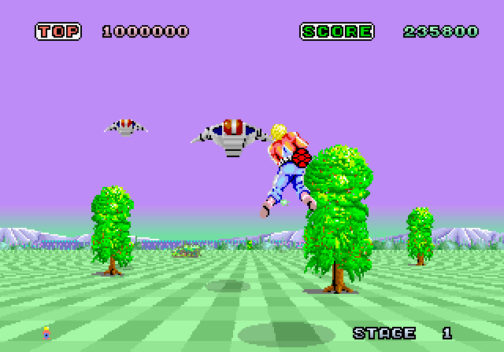
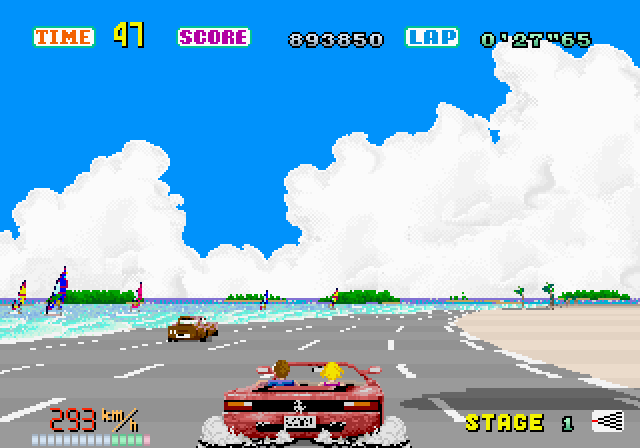
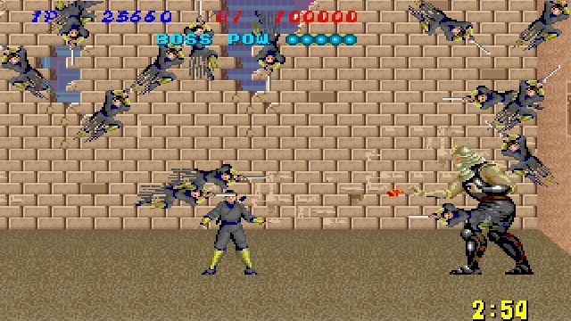
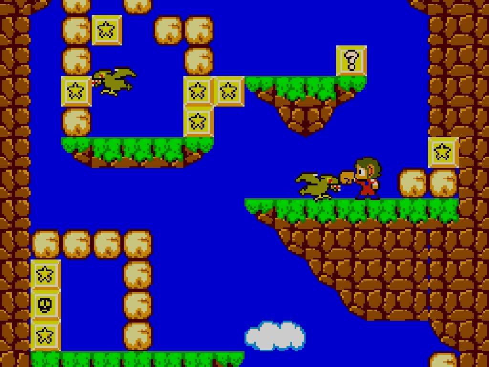

The story of the video game company
SEGA is a Japanese multinational video game developer, publisher, and hardware development company headquartered in Tokyo, Japan, with multiple offices around the world.
This society was founded in Honolulu, Hawaii in 1940 by Marty Bromley1, its former name was Service Games. It was expert in the field of coin-operated jukeboxes, games, and slot machines. In 1956 SErvice GAmes became SEGA.
During the 60ss and the 70ss, under David Rosen2’s leadership (he was an American Air Force Officer, former president of Rosen Enterprise, later merged to SEGA), SEGA continued to grow. It prospered heavily from the arcade gaming boom of the late 1970s, with revenues of over $100 million by 1979.
In order to keep pace with the rapid evolution of market games, SEGA, along with Gremlin Industries (run by Hayao Nakayama, who would later serve as Sega's CEO) developed and manufactured new microprocessor-based arcade games. Although, the video game crash in 1983 would force SEGA into an uncharted territory: the home console.
Sega entered in the home console market with the SG-1000. It was a failure compared to the products developed by Nintendo. This, though, helped the company to move to the American Market with the Mark III, which they redesigned as the SEGA Master System. Still SEGA was not able to reach Nintendo’s success.
During the end of the 80s and the beginning of the 90s, SEGA launched the Mega Drive. This console was regarded as the genesis for the West. SEGA also created their mascot (as Super Mario was for Nintendo): Sonic the Hedgehog.
SEGA managed to capture over half of the market share from Nintendo.
The most famous games
The most famous titles from SEGA began to be seen from the publication of Sega Master System, forwards: it delivered hits like Space Harrier, Out Run, Shinobi, and an original game exclusive to the console, Alex Kidd in Miracle World.
As far as the SEGA Mega Drive is concerned, the undisputed masterpiece was Sonic the Hedgehog.
Space Harrier

It was released in 1985, it is a third-person rail shooter game.
It was born as an arcade but then saw ports to many home game systems.
In the gameplay, the player is forced along the levels, running or flying around enemy fire, while shooting back with fireballs using an under-arm cannon.
The character graphics are sprite-based (two dimensional), though the level backgrounds are pseudo-3D.
Out Run

It was released in 1986, is an arcade 3D third-person racing game. It became one of the best-selling video games of its time, winning the Golden Joystick Award3 for Game of the Year.
One of the innovations was the moving cabinet that emulates the movements of the car along with graphics and music (the possibility of choosing which song listen while playing).
This game used to give a sense of luxury and relaxation. Yu Suzuki4 (the designer and developer) had classified Out Run not as a racing game, but as a "driving" game.
Shinobi

It was released in 1987, is a side-scrolling action game, as most games from SEGA. It was born as an arcade but then saw ports to many home game systems.
The main character is a modern day ninja who tries to save a student of him who was kidnapped from a group of terrorists. The game is five missions long (three stages for the first mission and four stages each for the rest).
The gameplay consists of eight way joystick and three action buttons for attacking, jumping and using "ninja magic" techniques. The ninja is equipped with weapons that are: an unlimited supply of shurikens, punches and kicks when attacking at close range, a gun and a katana slash(only when he reaches the attack upgrade).
Alex Kidd in Miracle World

It was released in 1986, it is a platform game. It was the first episode of this famous series.
Alex has to overcome obstacles and face many monsters in a 2D environment and in a total of 17 stages.
He is able to use a punch to attack enemies, break certain types of rocks to open blocks, access new areas and collect money. Certain books release an evil spirit that will try to kill Alex.
The game is not so obvious and easy to complete: any money Alex collects can be used to purchase items such as motorbikes and “peticopters" in order to better complete the various levels.
Sonic the Hedgehog

It was released in 1991, is a 2D side-scrolling platform video game. The main character is the well known blue hedgehog with spikes along his head: Sonic. He has to defeat the evil scientist Dr. Robotnik because he has imprisoned animals inside robots.
The gameplay is very fast, in fact Sonic is able to run at high speed through levels that include slopes, springs and high falls. During this, he has also to defeat enemies (with the Spin attack in which he curls into a ball) or avoid obstacles such as sharp spikes. During the game, Sonic has also to collect rings to restore his health(100 rings are equal to one more life).
This title was such a commercial success that finally SEGA was able to compete against Nintendo and his Super Mario Bros. Both games, in fact, started to spawn numerous sequels that nowadays are still released.
External Links
- Martin Bromley(founder)
- David Rosen
- Golden Joystick Award
- Yu Suzuki
- [Visited on 05/11/14] SEGA's logo
- [Visited on 05/11/14] Sonic
- All the images are Non-free game screenshots used on fair-use